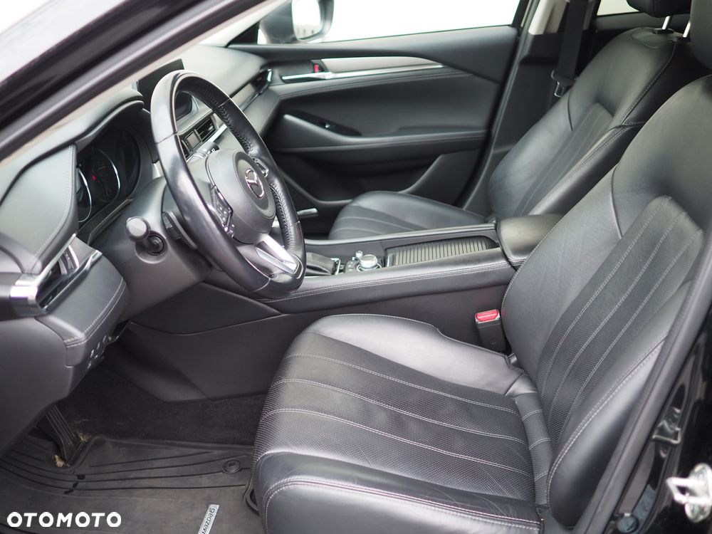
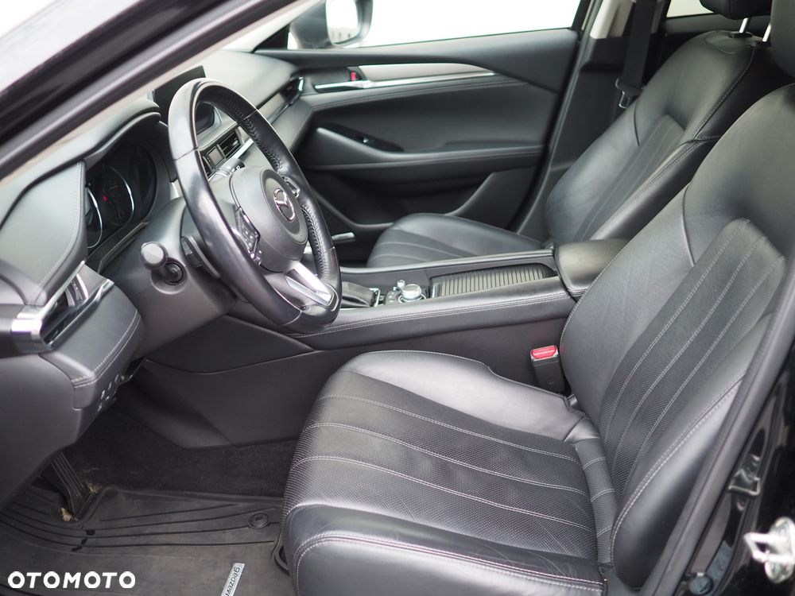
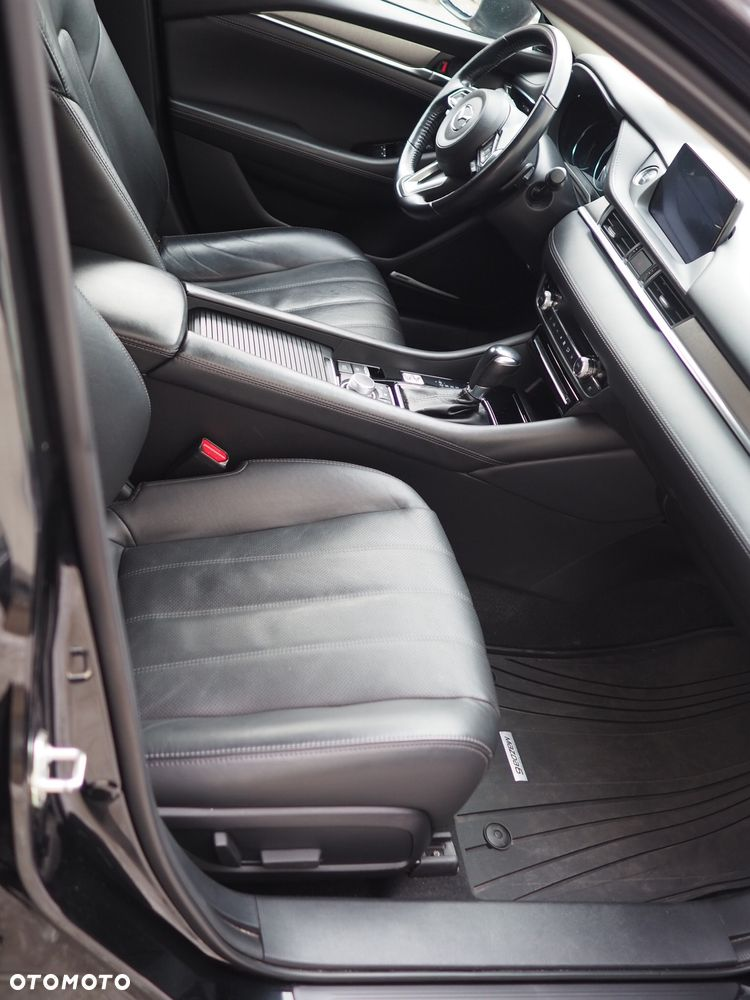
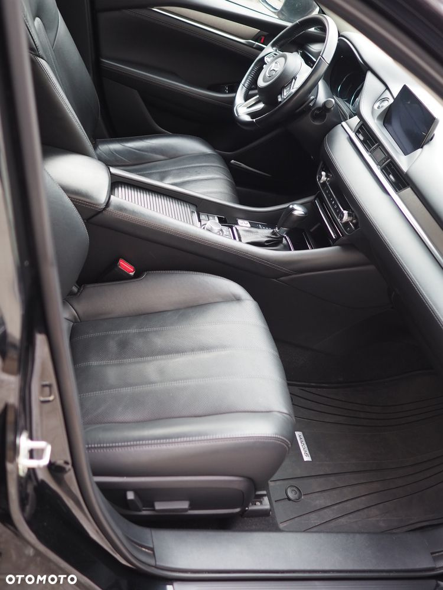

Sprzedam Mazdę 6 kombi, 2.5 194 KM w najwyższej wersji wyposażenia SkyPASSION.
Szczegółowe wyposażenie wyszczególnione w konfiguracji auta, wrzucam wraz ze zdjęciami samochodu.
Samochód pochodzi z polskiego salonu. Pierwsza rejestracja październik 2018.
Jestem drugim właścicielem, zakupiłem auto w październiku 2023 roku.
Od razu po zakupie dołożyłem w Autoryzowanym Serwisie Mazdy Odyssey:
Oryginalny Hak Mazda, używany jedynie do bagażnika rowerowego i boxa na narty - 4000 zł
Apple car Play/ Android Auto - 1600 zł
W lutym 2024 przy przebiegu 98 tys. km dynamiczna wymiana oleju w skrzyni biegów w Autoryzowanym Serwisie Mazda Odyssey.
W styczniu 2025 nowy akumulator - oryginalny Mazda, również w Autoryzowanym Serwisie Mazda Odyssey.`
Samochód nie wymaga najmniejszego wkładu finansowego, jest w ciągłej eksploatacji.
Od nowości do teraz wszystkie serwisy w Autoryzowanym Serwisie Mazda Odyssey - pełna historia/ faktury do wglądu.
Najbliższy przegląd 29.05.2026 lub 150 500 km.
Mazda jest w 100% bezwypadkowa. Nie brała udziału w żadnym wypadku, stłuczce.
Z wymienianych elementów w Autoryzowanym Serwisie Mazdy:
- przednia szyba po odprysku kamienia na autostradzie.
- przedni zderzak, szkoda parkingowa - kierowca cofając oparł się o zderzak.
Pękła ramka atrapy chłodnicy i była mała rysa w dolnej części zderzaka.
Z OC sprawcy Autoryzowany serwis wymienił zderzak na nowy.
Zarysowanie i pęknięcie plastiku wrzucam do zdjęć.
- lusterko od strony kierowcy, szkoda parkingowa. Zarysowane przez kierowcę na parkingu, wymienione na nowe z OC sprawcy.
W mojej ocenie samochód jest utrzymany pedantycznie.
Wszystkie przeglądy, wymagane wymiany wykonywane na czas w Autoryzowanym Serwisie Mazda.
Na koszt kupującego wyrażam zgodę na sprawdzenie auta w dowolnym serwie, stacji kontroli pojazdów.
 
 
